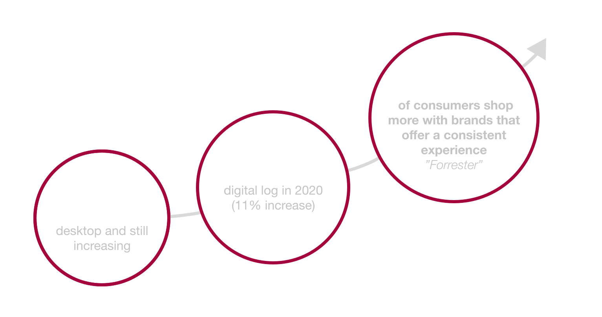

Back
Lloyds banking group had a design system tailored for web, including components, typography, and layouts optimised for larger screens. But there was an increasing need to offer the same robust experience on mobile devices.
• No mobile design system and designers using out of date guidelines (no single source of truth)
• Single code base so all components need to have correct 1-to-1 mapping, any changes or updates to one brand will automatically apply to all brands.
• Lack of consistent across different platforms and brands
• Design and developers not using the single code based correctly and creating independent styles
• Allows for continuous improvement and scaleability
• Android and iOS have different native UI patterns, navigation styles, and system conventions (e.g., Material Design vs. Human Interface Guidelines).
• Consistency needs to be balanced with maintaining platform-specific experiences to adhere to user expectations.
The strategy involved adapting key elements of the desktop design system while optimising for mobile usage patterns:
Implementing an unified mobile design system addressed critical challenges and resulted in significant improvements in efficiency, consistency, and collaboration. By establishing a single source of truth and creating reusable components, not only enhanced its product development process but also reinforced its brand identity. The design system's scalability ensures continued growth and will adapt to future needs, making it a crucial asset for the company's ongoing success.
Back